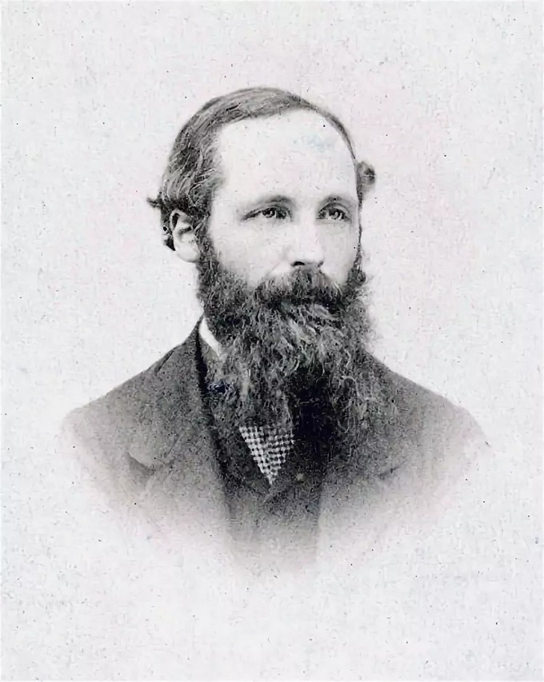
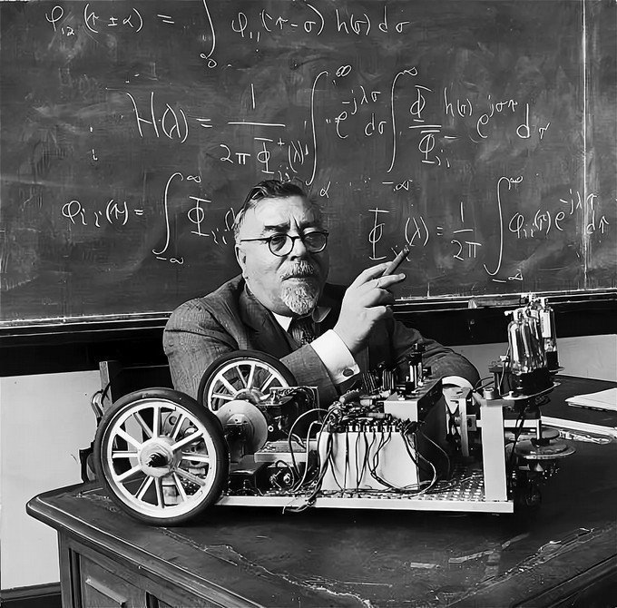

Добро пожаловать на мой сайт!

Что такое кибернетика?
Киберне́тика (от др.-греч. κυβερνητική «искусство управления») — наука об общих закономерностях получения, хранения, преобразования и передачи информации в сложных управляющих системах, будь то машины, живые организмы или общество
Слово «кибернетика» впервые употребил Платон в диалоге «Законы» (4 в. до н. э.) для обозначения «принципов управления людьми». В научный оборот термин «кибернетика» ввел французский физик и математик Андре-Мари Ампер, чьим именем мы измеряем силу электрического тока. В 1834 году в своем фундаментальном труде «Опыт о философии наук, или аналитическое изложение естественной классификации всех человеческих знаний» он определил кибернетику как науку об управлении государством, которая должна обеспечить гражданам разнообразные блага.
В том виде, в каком мы понимаем его сегодня, термин «кибернетика» ввел американский математик Норберт Винер в своей книге «Кибернетика, или Управление и связь в животном и в машине», опубликованной издательством MIT Press/Wiley and Sons в 1948 году.Он создал совершенно новую область исследований и совершенно новый взгляд на мир.
Уникальность его идей в том, что он показал: животные, как и машины, могут быть включены в более обширный класс объектов, отличительной особенностью которого является наличие систем управления.

Методы кибернетики
Кибернетика использует для исследования систем три принципиально различных метода. Два из них — математический анализ и физический эксперимент широко применяются и в других науках. Сущность первого метода состоит в описании изучаемого объекта в рамках того или иного математического аппарата (например, в виде системы уравнений) и последующего извлечения различных следствий из этого описания путем математической дедукции (например, путем решения соответствующей системы уравнений). Сущность второго метода состоит в проведении различных экспериментов либо с самим объектом, либо с его реальной физической моделью.
Одним из важнейших достижений кибернетики является разработка и широкое использование нового метода исследования, получившего название вычислительного (машинного) эксперимента, или математического моделирования. Смысл его состоит в том, что эксперименты производятся не с реальной физической моделью изучаемого объекта, а с его математическим описанием, реализованным в компьютере. Огромное быстродействие современных компьютеров зачастую позволяет моделировать процессы в более быстром темпе, чем они происходят в действительности.
Основные принципы кибернетики
Принцип «черного ящика» ввел английский психиатр, специалист по кибернетике и пионер в исследовании сложных систем Уильям Эшби. Этот принцип позволяет изучать поведение системы, то, как она реагирует на внешние воздействия, и в то же время абстрагироваться от ее внутреннего устройства. То есть кибернетики соглашаются с когнитивными ограничениями человека и невозможностью понять всех состояний системы, которые она может принимать прямо сейчас.
Закон обратной связи заключается в простом факте: если есть объект управления и субъект управления, то для выработки адекватных управляющих воздействий, имея информацию о состоянии объекта, субъект может принимать адекватное решение по его управлению. То есть манипулируя входными сигналами, мы можем наблюдать некий результат работы системы на выходе. При этом принципы и законы кибернетики одинаково применимы к управлению автомобилем, крупным предприятием, поведением толпы или бионическим протезом.
Одно из важнейших достижений кибернетики — разработка и широкое использование метода математического моделирования. Он позволяет проводить эксперименты не с реальными физическими моделями изучаемых объектов, а с их математическим описанием в виде компьютерных программ.
Сферы кибернетики
Хоть и считается, что как наука кибернетика сегодня предана забвению, она успела породить много направлений:
-
искусственный интеллект;
-
медицинская кибернетика;
-
биологическая кибернетика;
-
инженерная кибернетика;
-
спортивная кибернетика;
-
экономическая кибернетика;
-
социальная кибернетика;
-
правовая кибернетика и другие.

Учёные-кибернетики
Управление кибернетическими механизмами регулирования было еще заложено в устройствах Ктесибия, жившего в 2-1 веках до нашей эры, и Герона Александрийского (около 1 в. до н.э.).
В средние века основы дисциплины применялись в изготовлении часовых и навигационных приборов или различных видов мельниц, где требовалось автоматическая регулировка работы устройств.
Основной рассвет систематизации кибернетики возник в век пара, относящий к технологическому периоду использования его в устройствах движения. Первый автоматический регулятор работы паровых двигателей запатентован Джеймсом Уаттом (1736-1819), они же, в свою очередь, дали большой толчок процессу индустриализации общества. Теоретические работы по кибернетическим системам тех лет относят к статье Джеймс Клерк Максвелла (1831-1879), посвященной регуляторам.

Дальнейшее развитие дисциплина получила в трудах И.А. Вышнеградского (1832-1895). Сравнение естественных биологических систем и их реакций изучалось, в рамках кибернетики, И.П. Павловым (1849-1936) и П.К. Анохиным (1898-1974). Окончательное математическое обоснование наука получила в работах А. М. Тьюринга, А. Н. Колмогорова, Э. Л. Поста, В. А. Котельникова, А. Чёрча.
Современное понимание кибернетических систем и информатики было определено в рамках создания первой электронной вычислительной машины, прообраза компьютера, Нобертом Винтером, В. Бушем, Дж. фон Нейманом, У. Мак-Каллок и А. Розенблют. Итог работы этой группы относительно реальных технических и практических задач был опубликован Винтером в его книге «Кибернетика», изданной в 1948 году.
